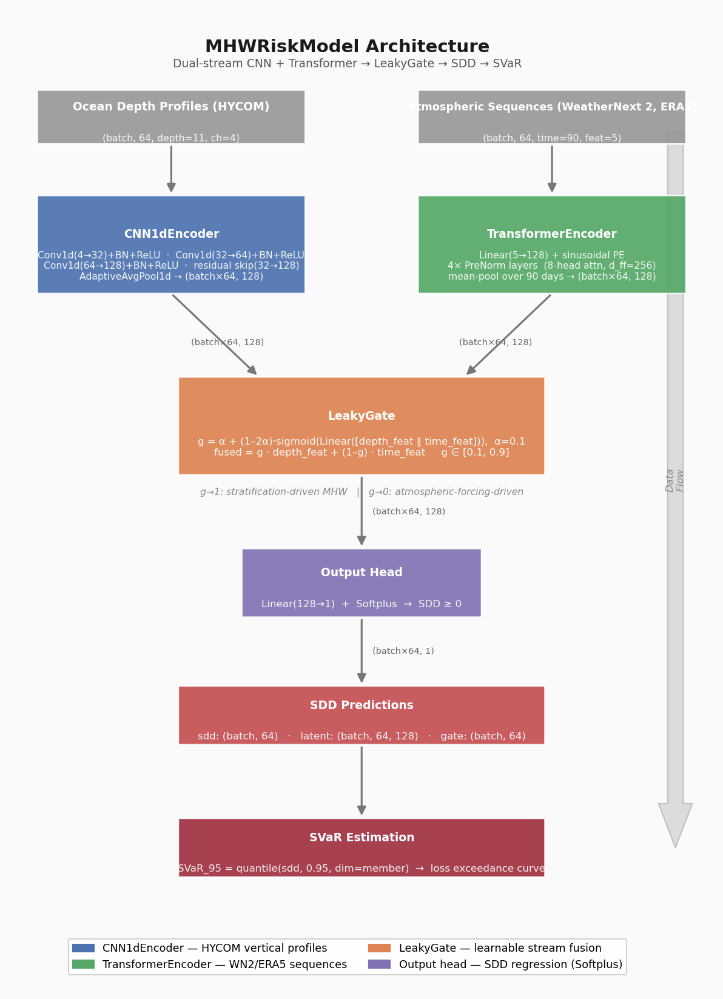

Gulf of Maine · Marine Heatwave Risk Research
Marine heatwave events translate directly into financial losses for aquaculture operators and climate insurers, but the connection between ocean temperature anomalies and dollar exposure has historically been opaque. This project builds that bridge: fusing 90-day atmospheric ensemble forecasts with 3D ocean depth data to translate climatological states (cumulative heat stress, subsurface temperature anomalies) into forward-looking financial risk estimates stakeholders can act on. Google's WeatherNext 2 model generates 64 independent atmosphere simulations per forecast; HYCOM tracks temperature, salinity, and currents at 10 depth levels below the surface. A deep learning model combines both streams, mapping physical ocean conditions to financial exposure across every Gulf of Maine cell up to 90 days in advance. The primary model uses WeatherNext 2, Google's most sophisticated new foundation weather model, with ERA5, the established legacy atmospheric reanalysis, as a comparison baseline.
How It Works
Two years of daily data harmonized to a shared 0.25° grid, stored in Google Cloud.
What is SDD?
Stress Degree Days measure cumulative heat above the historical average — the same concept used by coral reef scientists to predict bleaching. One SDD = one day where ocean temperature exceeds the baseline by 1°C.
Why 64 members?
WeatherNext 2 runs the atmosphere 64 independent ways. The spread of outcomes across those 64 runs is what drives the uncertainty range in our risk estimate — higher spread means less predictable conditions.
SVaR defined
Stress Value-at-Risk is the 95th-percentile outcome across the 64 ensemble members. In insurance terms: "at most 1-in-20 scenarios exceed this level of thermal stress."
Model Architecture
The model processes every ocean cell independently with two parallel information streams — one for depth, one for time — and learns to weight them.

Training Results
Trained on 2022 Gulf of Maine data, validated on 2023. Early stopping halted training when validation loss stopped improving.
Risk Output
SVaR95 [°C·day] — 95th-percentile cumulative thermal stress across ensemble members. Higher values = greater heatwave risk for marine assets.
What's Next
v1 establishes the full pipeline. v2 addresses the core scientific limitations to produce publication-ready results.